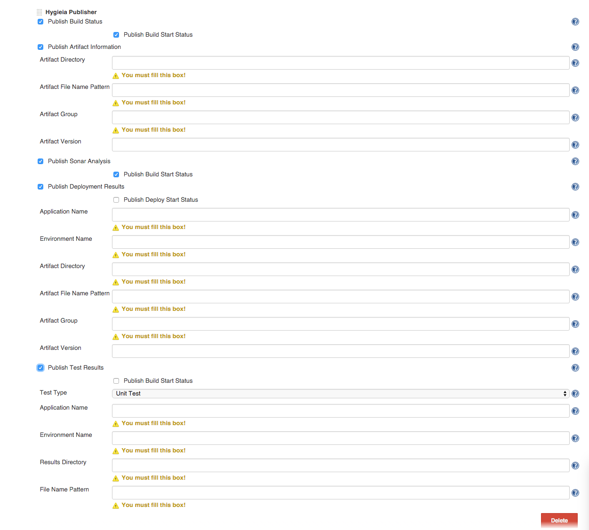

This plugin uses the Hygieia core package. The main project is JDK 1.8 compiled,
if you have Jenkins running on previous Java versions,
make sure to recompile core package with that previous version and then build this Jenkins plugin.
Install Maven and JDK. This was last built with Maven 3.2.5 and OpenJDK 1.7.0_75
Run unit tests
mvn test
Create an HPI file to install in Jenkins (HPI file will be in target/hygieia-publisher.hpi).
mvn clean package
- Install the plugin by using "Advanced" option in Jenkins Plugin Management option to
manually upload the file from local disk.
- Restart jenkins.
- Configure Global Hygieia Publisher in Jenkins Manage Jenkins/Configure System. Enter Hygieia API url such as http://localhost:8090/api. There is no API token implented at this time and it is work in progress.

- For a build job, add a Post build action "Hygieia Publisher".
- Select what to send to Hygieia. Currently, "Build", "Artifact Info", "Sonar Anslysis", "Deployment" and "Cucumber Test Results" can be published.
